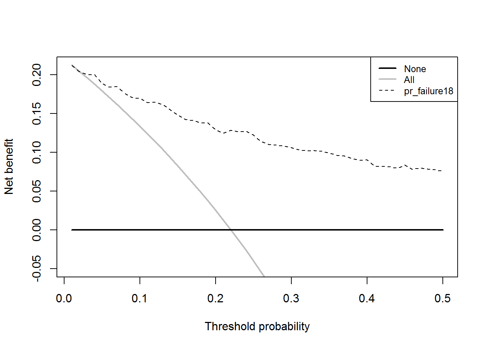
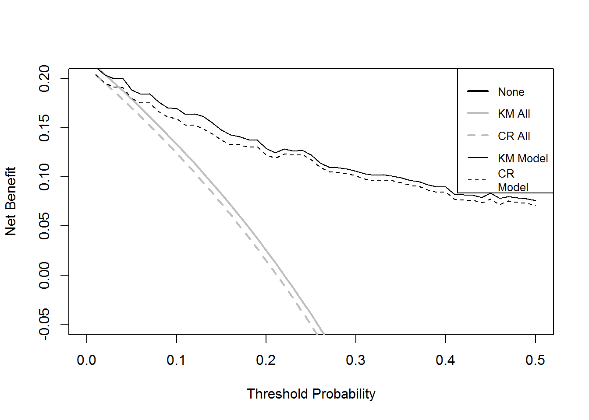

Diagnostic and prognostic models are typically evaluated with measures of accuracy that do not address clinical consequences. Decision-analytic techniques allow assessment of clinical outcomes but often require collection of additional information and may be cumbersome to apply to models that yield a continuous result. Decision curve analysis is a method for evaluating and comparing prediction models that incorporates clinical consequences, requires only the data set on which the models are tested, and can be applied to models that have either continuous or dichotomous results. This document will walk you through how to perform a decision curve analysis (DCA) in many settings, and how to interpret the resulting curves. In DCA prediction models are compared to two default strategies: 1) assume that all patients are test positive and therefore treat everyone, or 2) assume that all patients are test negative and offer treatment to no one. “Treatment” is considered in the widest possible sense, not only drugs, radiotherapy or surgery, but advice, further diagnostic procedures or more intensive monitoring. For more details on DCA, visit decisioncurveanalysis.org. You’ll find the original articles explaining the details of the DCA derivation along with other papers providing more details.
We’ll be working with the example dataset (dca.df), available on our website. Patients went to have the marker measured and patients were followed to determine whether they were eventually diagnosed with cancer, as well as the time to that diagnosis or censoring. We want to build a model of our own based on age, family history, and the marker, and assess how good the model is at predicting cancer by 18 months, 1.5 years.
library(dca)
# keeping variable for binary outcome examples
data(dca.df)
dca.df = dca.df[, c("patientid", "cancer", "ttcancer", "age", "famhistory", "marker", "dead")]The survival probability to any time-point can be derived from any type of survival model; here we use a Cox as this is the most common model in statistical practice. The formula for a survival probability from a Cox model is given by: \[ S(t|X) = S_0(t)^{exp(X\beta)} \]
Where \(X\) is matrix of covariates in the Cox model, \(\beta\) is a vector containing the parameter estimates from the Cox model, and \(S_0(t)\) is the baseline survival probability to time \(t\).
To get such values within our code, we will run a Cox model with age, family history, and the marker, as predictors, save out the baseline survival function in a new variable, and obtaining the linear prediction from the model for each subject.
We then obtain the baseline survival probability to our time point of interest. If no patient was observed at the exact time of interest, we can use the baseline survival probability to the observed time closest to, but not after, the time point. We can then calculate the probability of failure at the specified time point. For our example, we will use a time point of 1.5, which would corresponds to the eighteen months that we are interested in.
#Load survival library
library(survival)
#Run the cox model
coxmod = coxph(Surv(ttcancer, cancer) ~ age + famhistory + marker, data=dca.df)
#the probability of failure is calculated by subtracting the probability of #survival from 1.
dca.df$pr_failure18 = c(1- (summary(survfit(coxmod, newdata=dca.df), times=1.5)$surv))The code for running the decision curve analysis is straightforward after the probability of failure is calculated. All we have to do is specify the time point we are interested in. For our example, let us not only set the threshold from 0% to 50%, but also add smoothing. Note that different programs use different smoothers as there is no one smoother that is best in every situation. As such, results of a smoothed curve should always be compared with the unsmoothed curve to ensure accuracy. A LOESS smoother is utilized. Infrequently, while performing the smoothing, R will print an error. In this case, you’ll need to forego the automated smoothing within the DCA function. If you would like to perform smoothing, save the resulting net benefit values and apply your chosen method of smoothing after the decision curve has been calculated.
results = stdca(data=dca.df, outcome="cancer", ttoutcome="ttcancer", timepoint=1.5, predictors="pr_failure18", xstop=0.5, smooth=TRUE)
#> Warning in sqrt(sum.squares/one.delta): NaNs produced
#> Warning in sqrt(sum.squares/one.delta): NaNs producedThis shows that using the model to inform clinical decisions will lead to superior outcomes for any decision associated with a threshold probability of above 2% or so.
At times, data sets are subject to competing risks. For example in our cancer dataset, patients may have died prior to cancer diagnosis. To run a competing risk analysis, we first create a failure variable that indicates which patients died before a cancer diagnosis. Using the traditional approach, patients are coded 0 if they do not have an event, 1 if they have the event of interest (cancer diagnosis) before the competing event and 2 if they have the competing event (death) before the event of interest.
dca.df$status = dca.df$cancer + dca.df$dead * (dca.df$cancer==0) * 2We then load the competing risks package (cmprisk) and run the analysis specifying the competing risk variable.
library(cmprsk)
#We declare the survival data variables within the stdca function and run
#the decision curve analysis
results = stdca(data=dca.df, outcome="status", ttoutcome="ttcancer", timepoint=1.5, predictors="pr_failure18", cmprsk=TRUE, smooth=TRUE, xstop=0.5)
#> Warning in sqrt(sum.squares/one.delta): NaNs produced
#> Warning in sqrt(sum.squares/one.delta): NaNs producedThe competing risk model does not change our conclusion that the statistical model would improve clinical decision making for all decisions.
As the two models look similar, we can show how to get both figures on one graph. This would also be a good example of how graphs can be drawn by saving out results. First, we start with recreating the original (Kaplan-Meier) model again, but this time creating a temporary file that will be used to store the results. As we’ve already seen the figures after adding smoothing, let us now omit that.
km = stdca(data=dca.df, outcome="cancer", ttoutcome="ttcancer", timepoint=1.5,
predictors="pr_failure18", xstop=0.5)
Second, we will do the same for the second (Competing Risk) model and also saving these results to a different temporary file.
cr = stdca(data=dca.df, outcome="status", ttoutcome="ttcancer", timepoint=1.5,
predictors="pr_failure18", cmprsk=T, xstop=0.5)Now we simply create the graph. As the net benefits for the “Treat All” models extend far into negative values, let us specify as only being interest in the range of net benefits greater than −0.05. This is the default for the dca command, or it can be specified. Let us also give the y-axis a title.
plot(km$net.benefit.threshold, km$net.benefit.none, type = "l", lwd=2,
xlim=c(0,.50), ylim=c(-.05, .20), xlab = "Threshold Probability",
ylab = "Net Benefit")
lines(km$net.benefit$threshold, km$net.benefit$all, type="l", col=8, lwd=2)
lines(km$net.benefit$threshold, cr$net.benefit$all, type="l", col=8, lwd=2, lty=2)
lines(km$net.benefit$threshold, km$net.benefit$pr_failure18, type="l", col=1)
lines(cr$net.benefit$threshold, cr$net.benefit$pr_failure18, type="l", col = 1,
lty=2)
legend("topright", cex=0.8, legend=c("None", "KM All", "CR All", "KM Model", "CR
Model"), col=c(17, 8, 8, 1, 1), lwd=c(2, 2, 2, 1, 1), lty=c(1, 1, 2, 1, 2))
Here the decision curves adjusting for competing risk are shown in orange and red; the decision curves with patients censored at the time of death are shown in green and blue. Competing risk shifts all lines down, that is, estimates a lower net benefit, because censoring at the time of death overestimates the risk of death.